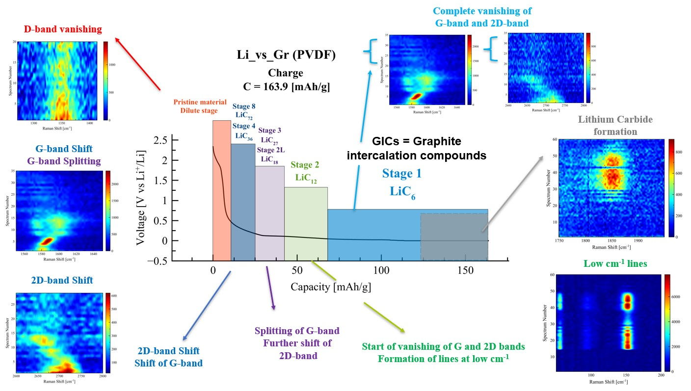
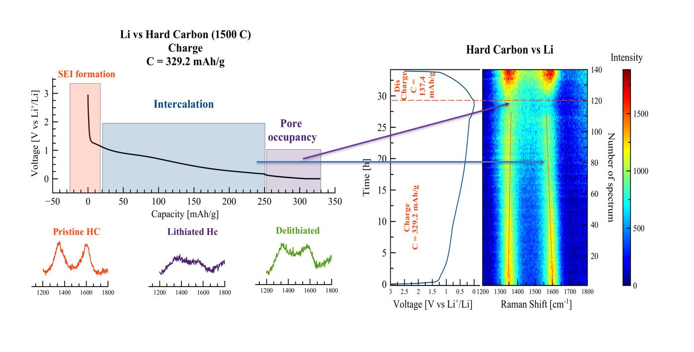

Carbon Anodes for Metal-ion Batteries: Insights from Raman Spectroscopy
Research results:
- Various graphite and hard carbon materials have been investigated by means of Raman
spectroscopy (with imaging).
- Evolution of graphite anode upon lithiation has been successfully monitored by operando
Raman spectroscopy.
- Lithiation of hard carbon leads to the low-frequency shift of G-band (reveals the
intercalation process) and subsequent decrease of the intensity of both G and D bands
(attributed to pore occupancy).
1. Analysis of graphite anodes via spectal images.
2. Evolution of graphite anode during charge.
This picture summarizes spectral
changes corresponding to the
changes that occur within half-cell. Orienting on the spectral
changes it's possible to depict
the stages of GICs formation and
therefore the transition from one
intercalation stage to another
during charge.

3. Evolution of Hard Carbon
(HC) anode during charge.
There are two principal changes
on this image: shift of G-band
and gradual fading of both G and
D bands to the end of charge.
Orienting on this data it’s
possible to assign the G-band
shift to the intercalation process,
while the synchronic lose of
intensity for both of these bands
happens during the occupancy of
pores in HC.
